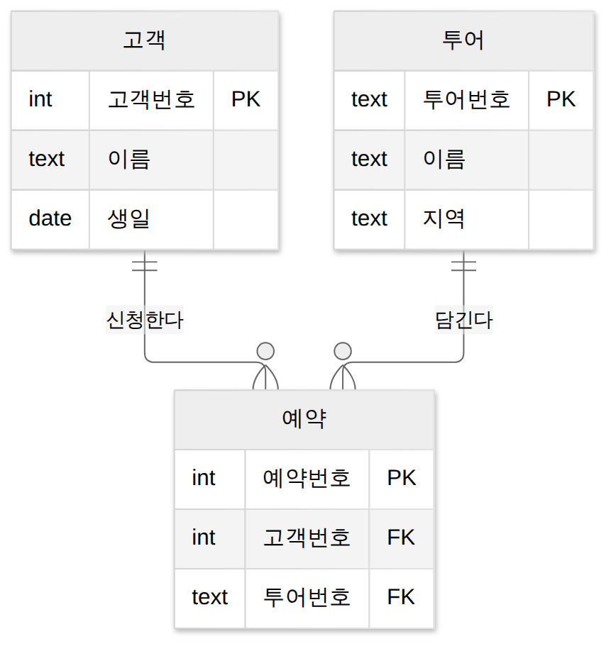

D047 · 길벗투어 예약 업무를 한 장 그림으로 — E-R 모델의 개체 · 관계 · 속성과 표기 기호, 1:N · M:N
B3 어제(D046)는 데이터베이스 설계를 다섯 단계로 나누고, 그중 개념적 설계의 결과물이 E-R 다이어그램이라는 데까지 왔어요. 오늘은 그 그림 자체를 하루 온전히 들여다봐요. E-R 모델 · 데이터 모델링 · 설계 단계 묶음은 최근 20회 시험에 한 번도 빠지지 않고 나온 2과목 단골이고, 그중 “이 기호는 무엇을 뜻하나”가 가장 자주 나와요. 예시는 어제와 같은 여행사 ‘길벗투어’예요.
- E-R 모델이 피터 첸(Peter Chen)이 제안한 개념적 데이터 모델이고 특정 DBMS와 무관하다는 점을 설명하고, 개체 · 관계 · 속성을 정의하며 개체 타입과 인스턴스를 구별할 수 있다
- E-R 표기 기호(사각형 · 마름모 · 타원 · 선, 이중 타원 · 밑줄 · 점선 타원 · 이중 사각형)를 그림에서 읽고, “속성 = 오각형” 같은 틀린 연결을 걸러낼 수 있다
- 속성 종류(단일값/다중값 · 단순/복합 · 저장/유도)를 예시에서 분류할 수 있다
- 1 : 1 · 1 : N · M : N 관계와 참여 제약(전체 · 부분)을 그림과 문장에서 판단하고, 같은 관계를 첸 표기와 까마귀발 표기로 대응시킬 수 있다
정처기 D044:로 답장해 주세요. D045(관계해석)는 11/22 일요 종합 때 안내할게요. 오늘 내용은 D046의 ‘개념적 설계’만 알면 따라올 수 있어요.0. 같은 것을 세 이름으로 부르는 회의실
길벗투어의 시스템 개편 회의. 영업팀은 고객이 투어를 잡는 일을 ‘예약’이라 부르고, 정산팀은 같은 걸 ‘주문’이라 부르고, 개발자는 코드에 booking이라고 적어요. 영업팀은 “한 고객이 투어를 여러 개 잡을 수 있죠”라고 생각하는데, 정산팀은 “주문 한 건에는 투어 하나”라고 생각해요. 둘 다 맞는 말인데, 말로만 주고받으면 서로 다른 그림을 머릿속에 그린 채 회의가 끝나요. 세 사람이 같은 걸 말하는지 확인하는 가장 싼 방법은 회의를 한 번 더 하는 게 아니라 그림 한 장을 같이 보는 거예요.
오늘 그 그림을 그려요. 등장인물은 고객 셋(가온 · 나래 · 다솜), 투어 셋(T1 제주 올레 3일 · T2 부산 먹방 2일 · T3 강릉 해변 2일), 예약 다섯 건이에요. 가온은 T1 · T2를, 나래는 T1 · T2 · T3를 신청했고, 다솜은 회원 가입만 하고 아직 신청이 없어요. 가온은 전화번호가 두 개(010-1111 · 02-2222)예요. 이 숫자들이 오늘 그림과 실행 상자에 계속 나와요.
1. 장면 1 — E-R 모델이란 기출 14회
정의와 등장 배경
정의: E-R 모델(Entity-Relationship Model, 개체-관계 모델)은 현실 세계의 데이터를 개체(Entity), 개체 사이의 관계(Relationship), 그리고 그 둘을 설명하는 속성(Attribute)으로 나타내는 개념적 데이터 모델이에요. 1976년 피터 첸(Peter Chen)이 논문으로 제안했고, 이 모델을 기호로 그린 그림이 E-R 다이어그램(ERD)이에요. 시험에서 “P. Chen이 제안한, 현실 세계를 개체 타입과 관계 타입으로 표현하는 모델”이라고 하면 답은 E-R 모델이에요.
왜 이런 모델이 필요했을까요? 그 무렵 데이터베이스는 계층형 · 네트워크형 · 관계형처럼 구현 방식이 서로 다른 모델이 경쟁하고 있었어요. 업무 담당자와 설계자가 처음부터 “트리로 저장할까, 표로 저장할까”를 놓고 이야기하면 정작 업무에 무엇이 있는지는 뒷전이 되죠. 첸은 구현 방식과 상관없이 먼저 업무에 존재하는 것과 그 연결만 그려서 합의하고, 구현은 그다음에 고르자고 제안했어요. 그래서 E-R 모델은 D046의 설계 5단계 중 개념적 설계에서 쓰는 도구이고, 어느 DBMS로 만들지 정하기 전에 그리는 그림이라 DBMS에 독립적이에요. 관계형 DB로 만들든 다른 방식으로 만들든 같은 E-R 그림에서 출발할 수 있어요.
개념적 모델이라는 말은 “사람이 이해하기 위한 그림”이라는 뜻이기도 해요. E-R 다이어그램에는 테이블 이름 규칙, 인덱스, 자료형 같은 구현 세부가 없어요. 대신 업무 담당자가 손가락으로 짚으며 “여기 고객이 있고, 고객이 투어를 신청하고, 신청에는 날짜가 있다”고 확인할 수 있어요. 요구 분석에서 받은 문장들이 처음으로 모양을 갖추는 단계라고 보면 돼요. 정리하면 E-R 모델 개념의 세 기둥은 ‘첸이 제안 · 개념적 설계의 도구 · DBMS 독립’이에요.
E-R 모델과 관계 데이터 모델 — 그림과 표
D043에서 본 관계 데이터 모델과는 무엇이 다를까요? 둘 다 “관계”라는 말이 들어가서 헷갈리지만 자리가 달라요. E-R 모델은 개념 단계의 그림이라 개체 · 관계 · 속성을 각각 다른 기호로 그려요. 관계 데이터 모델은 논리 단계의 표라서 개체도 관계도 모두 릴레이션(표)으로 나타내고, 개체 사이의 연결은 기본키와 외래키의 같은 값으로 표현해요. 그림 2의 왼쪽 마름모 ‘신청’이 오른쪽에서는 예약 표와 그 안의 외래키 두 개가 된 것처럼요. 즉 E-R 그림을 다 그린 뒤 관계 데이터 모델의 표로 옮기는 것이 다음 단계(논리적 설계)의 일이에요.
현업 개발자 입장에서 비유하면, E-R 다이어그램은 기획 회의 화이트보드이고 관계형 스키마는 마이그레이션 파일이에요. 화이트보드에 외래키 컬럼 이름까지 적을 필요는 없고, 마이그레이션 파일에 “고객이 투어를 신청한다”는 문장은 없어요. 둘을 잇는 규칙(마름모는 언제 외래키가 되고 언제 별도 표가 되나)은 11/23 D049에서 정식으로 배워요.
2. 장면 2 — 개체 · 관계 · 속성 기출 12회
개체 (Entity)
정의: 개체는 현실 세계에서 다른 것과 구별되어 독립적으로 존재하고, 업무가 정보를 저장 · 관리해야 하는 대상이에요. 사람(고객)처럼 눈에 보이는 것도, 투어 상품이나 계좌처럼 개념으로만 있는 것도 개체가 될 수 있어요. 조건은 두 가지예요. 하나, 업무에 필요해야 해요 — 투어 버스의 타이어 공기압은 실재하지만 예약 시스템이 관리하지 않으니 개체가 아니에요. 둘, 여러 건이 있고 하나하나를 구별할 수 있어야 해요 — 그래서 개체마다 키 속성(고객번호)을 정해요. 개체는 나중에 관계형 DB에서 테이블이 되는 후보예요.
여기서 개체 타입과 개체 인스턴스를 구별해야 해요. ‘투어’는 같은 속성을 가진 대상들의 틀, 즉 개체 타입이고, ‘T1 제주 올레 3일’은 그 틀로 만든 실제 한 건, 즉 인스턴스(개체 어커런스)예요. 개체 타입이 식당 메뉴판이라면 인스턴스는 오늘 나온 요리 한 접시예요. 메뉴판 하나로 접시는 얼마든지 만들 수 있죠. E-R 다이어그램의 사각형은 타입을 그린 것이고, 인스턴스는 나중에 테이블의 한 행이 돼요.
관계 (Relationship)
정의: 관계는 두 개 이상의 개체 사이에 존재하는 의미 있는 연관이에요. “고객이 투어를 신청한다”의 ‘신청’이 관계예요. 관계에도 타입과 인스턴스가 있어서, ‘신청’이라는 관계 타입 아래에 “가온 — T1”, “나래 — T3” 같은 관계 인스턴스가 다섯 건 있어요. 관계는 보통 동사로 이름을 붙이고, 양쪽 개체가 서로 몇 개씩 이어질 수 있는지(카디널리티, 장면 5)를 함께 적어요.
관계에도 속성이 붙을 수 있다는 점이 중요해요. ‘예약일’은 가온의 성질일까요? 가온은 T1과 T2를 다른 날 신청했으니 가온 하나에 예약일 하나로 정할 수 없어요. T1의 성질일까요? T1에도 가온과 나래가 다른 날 신청했으니 그것도 아니에요. 예약일은 “가온이 T1을 신청한 바로 그 만남”에만 있는 값이라 관계에 속해요. 이렇게 어느 개체에 붙여야 할지 애매한 값은 관계의 속성일 가능성이 커요.
속성 (Attribute)
정의: 속성은 개체나 관계가 가진 성질 · 특징을 나타내는 값의 이름이에요. 고객의 이름 · 생일, 투어의 투어명 · 지역이 속성이고, 관계형 DB로 가면 테이블의 열(컬럼)이 돼요. D043에서 배운 대로 속성은 데이터를 구성하는 가장 작은 논리적 단위예요. 속성 가운데 개체 인스턴스 하나를 유일하게 구별하는 것은 키 속성(식별자)이라 부르고 밑줄로 표시해요. 속성에도 종류가 여럿 있는데, 장면 4에서 따로 다뤄요.
세 요소를 문장에서 찾는 요령은 품사예요. 명사를 찾아 상자에 넣고, 동사를 찾아 마름모로 잇고, 남은 수식어와 값은 타원으로 매달면 돼요. 국어 시간에 품사 분해를 하던 실력이 시험에서 처음으로 쓰이는 순간이에요. 물론 모든 명사가 개체가 되진 않아요 — “고객의 이름”에서 이름도 명사지만 혼자 관리할 대상이 아니라 고객을 설명하는 값이라 속성이에요. “따로 여러 건 관리하나?”를 물어보면 갈려요.
| 찾은 말 | 품사 | 기호 |
|---|---|---|
| 고객 · 투어 | 명사 | 사각형(개체) 두 개 |
① “고객이 투어를 신청한다.” 먼저 따로 존재하면서 여러 건 관리해야 하는 명사를 찾아요. 고객과 투어 — 사각형 두 개를 그려요.
| 찾은 말 | 품사 | 기호 |
|---|---|---|
| 고객 · 투어 | 명사 | 사각형 2 |
| 신청한다 | 동사 | 마름모(관계) |
② 두 명사를 잇는 동사 ‘신청한다’를 마름모로 그리고 양쪽 사각형과 선으로 이어요. 이제 “누가 무엇과 엮이나”가 보여요.
| 찾은 말 | 품사 | 기호 |
|---|---|---|
| 고객 · 투어 | 명사 | 사각형 2 |
| 신청한다 | 동사 | 마름모 |
| 이름 · 생일 / 투어명 · 지역 | 값 | 타원(속성) 4 |
③ 각 개체를 설명하는 값을 찾아 타원으로 매달아요. 고객에는 이름 · 생일, 투어에는 투어명 · 지역.
| 찾은 말 | 품사 | 기호 |
|---|---|---|
| 고객번호 · 투어번호 | 값(구별용) | 밑줄 친 타원(키) |
④ 같은 이름의 고객이 둘이면 누가 누구인지 모르니, 한 건을 콕 집어 주는 속성을 정해 밑줄을 그어요. 고객번호와 투어번호가 키 속성이에요.
| 찾은 말 | 품사 | 기호 |
|---|---|---|
| 예약일 | 값(만남의 것) | 마름모에 매단 타원 |
⑤ ‘예약일’은 고객의 성질도, 투어의 성질도 아니에요. 가온이 T1을 신청한 그 만남에만 있는 값이라 관계(마름모)에 매달아요. 이걸로 그림 4의 뼈대가 완성돼요.
E-R의 3요소 vs 데이터 모델의 구성 요소
D046에서 데이터 모델이 표시하는 요소는 구조 · 연산 · 제약조건 셋이라고 했어요. 오늘의 개체 · 관계 · 속성도 셋이라 시험이 두 목록을 섞어요. 둘은 질문이 달라요. 데이터 모델의 구성 요소는 “모델이라면 무엇을 정해야 하나”(모양 · 다루는 법 · 규칙)이고, E-R의 3요소는 “E-R 그림에 무엇을 그리나”(대상 · 연결 · 성질)예요. 개체와 관계를 그린 E-R 그림 전체는 데이터 모델의 구성 요소 중 구조에 해당해요. 반대로 연산(검색 · 삽입 같은 처리)은 E-R 그림에 그리지 않아요.
3. 장면 3 — 표기 기호 기출 11회
기본 기호 네 가지
정의: E-R 다이어그램의 표기법은 개체 · 관계 · 속성을 어떤 도형으로 그릴지 정한 약속이에요. 약속이 없으면 영업팀이 그린 동그라미가 개체인지 속성인지 개발자가 알 수 없어서, 그림으로 합의하려던 목적이 무너져요. 시험과 교재가 쓰는 것은 첸이 처음 제안한 첸(Chen) 표기법이에요.
첸 표기의 기본은 네 가지예요. 개체는 사각형으로 그리고 안에 개체 이름을 써요. 관계는 마름모로 그리고 안에 관계 이름(동사)을 써요. 속성은 타원으로 그리고 자기가 설명하는 개체나 관계에 붙여요. 이 셋을 잇는 것은 선(실선)이고, 개체와 관계를 잇는 선 위에 1 · N · M 같은 숫자를 적어 대응 수를 나타내요. 여기에 책과 기출이 함께 다루는 하나를 더하면 다중값 속성은 이중 타원이에요(장면 4).
그림 4를 말로 읽어 볼게요. “고객과 투어라는 개체가 있고(사각형 둘), 둘은 ‘신청’ 관계로 이어진다(마름모). 고객 한 명이 투어 여럿을, 투어 하나가 고객 여럿을 가질 수 있다(M · N). 고객은 고객번호(키) · 이름 · 전화번호(여러 개) · 생일 · 나이(계산)를, 투어는 투어번호(키) · 투어명 · 지역을 가진다. 신청에는 예약일이 있다.” 이 한 문단이 그림 한 장에 다 들어 있어요. 회의실에서 세 부서가 이 그림을 보고 고개를 끄덕이면 개념적 설계는 끝난 거예요.
확장 기호 책 밖 보충
영문 교재와 실무 문서에는 기본 넷 말고도 몇 가지 표시가 더 나와요. 시험 출제는 드물지만 그림을 읽을 때 당황하지 않도록 뜻만 알아 두세요. 밑줄은 키 속성(그림 4의 고객번호), 점선 타원은 유도 속성(나이), 이중 사각형은 약한 개체, 이중 마름모는 약한 개체와 소유 개체를 잇는 식별 관계, 개체와 관계를 잇는 이중선은 전체 참여(장면 5)예요. 그림 5가 아홉 가지를 한 장에 모은 사전이에요.
틀린 기호 걸러내기
기호 문제는 거의 늘 “기호와 의미의 연결이 옳지 않은 것”을 고르게 해요. 맞는 짝은 네 개로 고정이라 외우기 쉬운데, 출제자는 가짜 짝을 만드는 데 꽤 창의적이에요. 속성을 오각형이나 삼각형이나 원으로 그린다고 하고, 개체를 타원 · 관계를 사각형 · 속성을 선이라고 통째로 돌려 놓기도 하고, 연결선을 삼각형이라고 해요. 속성을 오각형으로 그리는 ERD 도구는 세상에 없어요. 선지에 오각형이 보이면 출제자가 켜 둔 ‘이 선지는 틀림’ 신호등이라고 생각하면 돼요.
약한 개체와 식별 관계 책 밖 보충
정의: 약한 개체(Weak Entity)는 자기 속성만으로는 인스턴스를 유일하게 구별할 수 없어서, 다른 개체(소유 개체)의 키를 빌려야 식별되는 개체예요. 길벗투어에서 예약마다 동반자를 1번, 2번으로 적는다고 해 볼게요. “동반자 2번”은 예약 7번에도 예약 9번에도 있으니 순번만으로는 누구인지 몰라요. “예약 7번의 동반자 2번”이라고 해야 한 명이 정해지죠. 이때 동반자가 약한 개체, 예약이 소유 개체, 둘을 잇는 관계가 식별 관계예요. 약한 개체의 자기 몫 키(순번)는 부분 키라고 하고 점선 밑줄로 표시해요. 약한 개체는 소유 개체 없이 존재할 수 없으니 언제나 소유 개체 하나에만 매달려요.
4. 장면 4 — 속성의 종류
왜 구분하나: 속성 종류를 나누는 이유는 단순해요. 그림에서 타원은 다 비슷해 보이지만, 나중에 표로 옮길 때 처리가 완전히 달라져요. 값이 여럿인 속성은 열 하나에 담을 수 없고, 계산되는 속성은 열로 저장하면 오히려 탈이 나요. 그래서 개념 단계에서 미리 표시해 두는 거예요. 세 축은 서로 독립이라 “복합이면서 다중값”인 속성(예: 여러 개의 주소)도 있어요.
단일값 속성 vs 다중값 속성
정의: 단일값 속성은 인스턴스 하나에 값이 하나만 있는 속성(고객의 이름 · 생일), 다중값 속성은 인스턴스 하나에 값이 여러 개 있을 수 있는 속성(가온의 전화번호 두 개)이에요. 다중값 속성은 이중 타원으로 그려요. 전화번호 칸에 쉼표로 세 개를 넣는 건 한 칸짜리 도시락에 밥과 국과 후식을 다 담는 것과 같아요. 열 때마다 “이건 뭐였지”가 시작되죠. 그래서 표로 옮길 때는 별도 표(고객전화)로 빼서 값 하나당 한 행으로 두는데, 이것이 나중에 배울 제1정규형(모든 값은 더 쪼갤 수 없는 원자값)과 이어져요.
단순 속성 vs 복합 속성
정의: 단순 속성은 더 작은 의미 단위로 나눌 수 없는 속성(생일, 성별), 복합 속성은 의미 있는 하위 속성 여러 개로 나눌 수 있는 속성이에요. 주소는 ‘시’와 ‘상세’로, 이름은 ‘성’과 ‘이름’으로 나눌 수 있어요. 그림에서는 복합 속성의 타원에 하위 속성의 타원이 매달린 모양으로 그려요. 쪼갤지 말지는 업무가 정해요 — “제주시 고객만 뽑아 달라”는 요구가 있으면 주소를 쪼개 두는 게 편하고, 우편 발송에만 쓴다면 통째로 둬도 돼요.
저장 속성 vs 유도 속성
정의: 저장 속성은 실제로 값을 저장하는 속성(생일), 유도 속성은 다른 속성 값에서 계산해 얻을 수 있는 속성(생일과 오늘 날짜에서 나오는 나이, 예약 건수)이에요. 유도 속성은 점선 타원으로 그려요. 나이를 열로 저장하면, 고객 생일이 지날 때마다 그 행에 “생일 축하 업데이트”를 돌려야 해요. 하나라도 빠뜨리면 같은 고객의 나이가 화면마다 다르게 나오죠. 그래서 유도 속성은 “저장하지 말고 필요할 때 계산하라”가 기본이에요. 다만 계산이 아주 비싸면 성능 때문에 일부러 저장하기도 하는데, 그건 물리 설계의 반정규화 이야기예요.
키 속성
정의: 키 속성은 개체 인스턴스 하나를 다른 것과 유일하게 구별해 주는 속성으로, 이름 아래 밑줄을 그어 표시해요. 고객번호 · 투어번호가 키 속성이고, 표로 옮기면 기본키 후보가 돼요. 이름은 동명이인이 있으니 키가 될 수 없어요. 키의 자세한 종류(후보키 · 기본키 · 대체키 · 슈퍼키)는 D043에서 본 그대로예요.
| 고객번호 | 이름 | 전화번호 |
|---|---|---|
| 1 | 가온 | 010-1111, 02-2222 ? |
| 2 | 나래 | 010-3333 |
① 가온은 전화번호가 두 개예요. 한 칸에 쉼표로 넣으면 “02-2222인 고객”을 찾을 때 문자열을 쪼개야 해요. 값이 여럿일 수 있으니 다중값 속성 — 그림에선 이중 타원이에요.
| 고객번호 | 전화 |
|---|---|
| 1 | 010-1111 |
| 1 | 02-2222 |
| 2 | 010-3333 |
② 표로 옮길 때는 다중값을 별도 표 고객전화로 빼서 값 하나당 한 행으로 둬요(정식 변환 규칙은 D049). 실행 상자 1이 이 표예요.
| 주소 | 시 | 상세 |
|---|---|---|
| 제주시 연동 12 | 제주시 | 연동 12 |
③ 주소는 ‘시’와 ‘상세’로 쪼갤 수 있어요. 하위 속성으로 나뉘는 속성이 복합 속성, 더 쪼갤 수 없는 생일 같은 속성이 단순 속성이에요.
| 이름 | 생일(저장) | 나이(유도) |
|---|---|---|
| 가온 | 1990-05-01 | 조회할 때 계산 |
④ 나이는 생일과 오늘 날짜만 있으면 계산돼요. 이렇게 다른 값에서 끌어내는 속성이 유도 속성(점선 타원)이고 보통 열로 저장하지 않아요. 생일처럼 실제로 저장하는 쪽이 저장 속성이에요.
첫 상자는 고객번호 1이 2개, 2가 1개로 두 행이 나와요. 다솜(3번)은 전화번호를 남기지 않았으니 결과에 없어요. 다중값 속성을 별도 표로 뺐기 때문에 “전화가 두 개인 고객”을 이렇게 쉽게 셀 수 있어요. 둘째 상자는 가온 36 · 나래 40 · 다솜 26이 나와요. 날짜를 2026-11-21로 고정했으니 언제 실행해도 같아요. 나래는 11월 30일생이라 아직 생일이 안 지나 40이에요. 나이 열이 없는데도 나이를 얻었죠 — 이게 유도 속성이에요.
5. 장면 5 — 카디널리티와 참여 제약
관계의 대응 수 — 1:1 · 1:N · M:N
정의: 카디널리티(대응 수, 관계 차수 비율)는 관계로 이어진 두 개체 사이에서, 한쪽 인스턴스 하나가 다른 쪽 인스턴스 최대 몇 개와 연결될 수 있는지를 나타내요. 세 가지예요. 1 : 1(일대일)은 양쪽 모두 하나씩만 — 고객 한 명에 회원 카드 한 장, 카드 한 장에 고객 한 명. 1 : N(일대다)은 한쪽은 여럿, 반대쪽은 하나 — 고객 한 명은 예약을 여러 건 하지만 예약 한 건의 주인은 고객 한 명. M : N(다대다)은 양쪽 모두 여럿 — 고객 한 명이 투어 여러 개를, 투어 하나에 고객 여러 명이.
판단 요령은 문장을 양방향으로 두 번 읽는 거예요. “고객 하나에 투어 몇 개?” 그리고 “투어 하나에 고객 몇 명?” 한 방향만 읽으면 1:N과 M:N을 헷갈려요. 영수증 한 장에 이름이 두 개 적혀 있으면 정산팀이 퇴근을 못 하니, 예약 쪽에서 보면 고객은 늘 하나예요. 그러니 고객 : 예약은 1:N이고, 같은 고객 : 투어는 M:N이에요. 대응 수는 E-R 그림이 표로 내려갈 때 결정적이에요 — 1:N은 N쪽 표에 외래키 하나로 끝나지만 M:N은 가운데에 표가 하나 더 생겨요.
| 예약 | 고객 |
|---|---|
| 1 | 가온 |
| 2 | 가온 |
| 3 | 나래 |
| 4 | 나래 |
| 5 | 나래 |
① 예약 다섯 건마다 고객을 적어요. 한 예약에는 고객이 딱 한 명, 한 고객(가온 · 나래)에게는 예약이 여러 건 → 고객 : 예약 = 1 : N.
| 예약 | 투어 |
|---|---|
| 1 | T1 |
| 3 | T1 |
| 2 | T2 |
| 4 | T2 |
| 5 | T3 |
② 이번엔 투어 쪽. 한 예약에 투어는 하나, 한 투어(T1 · T2)에는 예약이 여럿 → 투어 : 예약 = 1 : N.
| 고객 | 신청한 투어 | 개수 |
|---|---|---|
| 가온 | T1 · T2 | 2 |
| 나래 | T1 · T2 · T3 | 3 |
| 다솜 | — | 0 |
③ 예약을 건너서 고객 → 투어로 보면 가온은 둘, 나래는 셋. 고객 한 명이 투어 여럿과 이어져요.
| 투어 | 신청한 고객 | 개수 |
|---|---|---|
| T1 | 가온 · 나래 | 2 |
| T2 | 가온 · 나래 | 2 |
| T3 | 나래 | 1 |
④ 거꾸로 투어 → 고객도 T1 · T2에 둘씩. 양쪽 모두 “여럿”이니 고객 : 투어 = M : N이에요. 이 M : N을 받아 주는 가운데 표가 바로 예약이에요.
첫 상자는 가온 2 · 나래 3 · 다솜 0이에요. LEFT JOIN이라 예약이 없는 다솜도 0으로 나와요. 둘째 상자는 T1 2 · T2 2 · T3 1 — 투어 쪽에서도 고객이 여럿이니 고객 : 투어는 M:N이에요. 셋째 상자는 5행으로 가온(부산 먹방 · 제주 올레), 나래(강릉 해변 · 부산 먹방 · 제주 올레)가 나와요. 고객 표에 투어번호 열 하나를 두는 방식으로는 가온의 투어 둘을 담을 수 없고, 투어 표에 고객번호 열 하나를 두는 방식으로도 T1의 고객 둘을 담을 수 없어요. 둘을 잇는 예약 표가 가운데 있어서 이 결과가 나와요.
참여 제약 — 전체 참여 vs 부분 참여
정의: 참여 제약은 개체의 모든 인스턴스가 그 관계에 반드시 참여해야 하는지를 정한 규칙이에요. 모든 인스턴스가 최소 하나의 관계 인스턴스에 참여해야 하면 전체 참여(필수), 참여하지 않는 인스턴스가 있어도 되면 부분 참여(선택)예요. 첸 표기에서는 전체 참여를 이중선, 부분 참여를 단선으로 그려요. 길벗투어에서 예약은 고객 없이 생길 수 없으니 예약 쪽은 전체 참여, 고객은 예약 없이도 회원으로 존재하니(다솜) 고객 쪽은 부분 참여예요.
카디널리티와 참여 제약은 서로 다른 질문이에요. 카디널리티는 “최대 몇 개와 이어지나”, 참여 제약은 “최소 하나는 꼭 이어지나”예요. 그리고 참여 제약은 지금 들어 있는 데이터의 숫자가 아니라 업무 규칙이에요. 오늘 우연히 모든 고객이 예약을 갖고 있어도, 규칙상 예약 없는 고객을 허용하면 부분 참여예요. 실무에서는 이 규칙이 외래키 열의 NOT NULL 여부로 내려가요 — 오늘 seed의 예약 표가 고객번호를 NOT NULL로 둔 것이 예약 쪽 전체 참여를 지키는 장치예요.
결과는 1(다솜)이에요. 이 1이 고객 쪽을 부분 참여로 만든 게 아니라, 부분 참여라는 규칙이 다솜 같은 고객을 허용한 거예요. 참고로 NOT IN의 서브쿼리 결과에 NULL이 하나라도 섞이면 결과가 0행이 되는 함정이 있어요(D036). 예약.고객번호가 NOT NULL이라 여기서는 안전해요.
같은 관계, 두 가지 표기 — 첸과 까마귀발
지금까지 본 첸 표기는 마름모와 1 · N 글자로 관계를 나타내요. 실무 ERD 도구(ERwin, dbdiagram, MySQL Workbench 등)는 대부분 까마귀발(Crow’s Foot, IE) 표기를 써요. 까마귀발은 마름모 없이 개체 사이의 선 끝 모양으로 대응 수를 그려요. 세로 두 줄(‖)은 “꼭 하나”, 세 갈래로 벌어진 발 모양은 “여럿”, 동그라미(○)는 “0개도 가능”이에요. 그래서 “고객 ‖──○< 예약”은 “예약 하나에는 고객이 꼭 하나, 고객 하나에는 예약이 0개 이상 여럿”이라는 뜻으로, 첸 표기의 1 : N에 참여 제약까지 같이 담은 셈이에요. 시험은 첸 표기만 묻지만, 회사에서 보는 ERD는 대부분 까마귀발이니 두 표기를 오가며 읽을 수 있으면 좋아요.
M:N은 가운데 표가 필요하다 — 맛보기
관계형 표로는 M:N을 직접 담을 수 없어요. 열 하나에는 값 하나만 들어가니까요. 그래서 M:N 관계는 양쪽 키를 외래키로 가진 교차 표(연관 테이블)로 바꾸고, 그러면 M:N 하나가 1:N 두 개로 쪼개져요. 길벗투어의 예약 표가 바로 그 교차 표예요. 그림 11은 그 결과를 실무식 까마귀발 ERD로 그린 거예요. E-R의 각 요소를 표로 옮기는 전체 규칙(1:1 · 1:N · M:N · 다중값 · 약한 개체 각각)은 11/23 D049에서 정식으로 다뤄요.

이 상자는 일부러 오류가 나요. 예약 표의 투어번호가 투어 표를 참조하도록 외래키를 걸어 두었으니, 투어 표에 없는 T9는 들어갈 수 없어요. E-R 그림의 선 하나(예약 — 투어)가 관계형 DB에서는 이렇게 외래키 제약으로 살아 있어요. 그림에서 합의한 연결을 DBMS가 대신 지켜 주는 거예요.
참고로 D046에서 본 데이터 모델 종류도 대응 수와 연결돼요. 관계형은 1:1 · 1:N · M:N을 모두 표현할 수 있고, 계층형은 부모–자식 트리라 1:N만, 네트워크형은 M:N까지 표현할 수 있어요. 각 모델의 자세한 특징은 D049에서 이어서 봐요. 참고로 오너–멤버(Owner–Member) 관계는 네트워크형 모델(CODASYL DBTG)의 용어이지 E-R 모델의 용어가 아니에요. “E-R 모델에 대한 설명으로 옳지 않은 것”에 이 말이 섞여 나온 적이 있으니, E-R 쪽은 개체 · 관계 · 속성이라고 기억하세요.
6. 장면 6 — E-R이 표로 내려가는 길
정의: 데이터 모델은 추상화 수준에 따라 개념 · 논리 · 물리 세 수준으로 그릴 수 있고(D046), E-R 다이어그램은 그중 가장 위인 개념 수준의 결과물이에요. 개념 수준은 업무에 무엇이 있고 어떻게 얽혀 있는지만, 논리 수준은 특정 DBMS 종류(관계형)에 맞춰 테이블 · 기본키 · 외래키로, 물리 수준은 특정 제품에 맞춰 자료형 · 인덱스 · 저장 방식까지 정해요. 같은 길벗투어 업무가 세 번 다른 옷을 입는 셈이에요.
내려가는 길의 대응은 단순해요. 개체는 테이블(고객 → 고객 표), 속성은 컬럼(이름 → 이름 열), 키 속성은 기본키(고객번호 → PRIMARY KEY), 관계는 외래키나 교차 표(1:N 신청 → 예약 표의 고객번호 외래키, M:N 신청 → 예약 교차 표)가 돼요. 다중값 속성은 별도 표(고객전화), 유도 속성은 보통 컬럼을 만들지 않아요(나이). 오늘 실행 상자의 seed가 바로 그 결과물이에요. 이 대응을 규칙으로 정리해 손으로 변환해 보는 것이 11/23 D049의 일이에요.
| E-R 그림(개념) | 관계형 표(논리) | 오늘 seed에서 |
|---|---|---|
| 개체(사각형) | 테이블 | 고객 · 투어 |
| 속성(타원) | 컬럼 | 이름 · 생일 · 지역 |
| 키 속성(밑줄) | 기본키 | 고객번호 · 투어번호 |
| 1:N 관계 | N쪽 표의 외래키 | 예약.고객번호 → 고객 |
| M:N 관계(마름모) | 교차 표 + 외래키 2개 | 예약(고객번호, 투어번호) |
| 다중값 속성(이중 타원) | 별도 표 | 고객전화 |
| 유도 속성(점선 타원) | 보통 컬럼 없음(조회 때 계산) | 나이 |
| 전체 참여(이중선) | 외래키 NOT NULL | 예약.고객번호 NOT NULL |
7. 가르는 질문 표와 오늘의 지도
오늘 개념도 짝으로 헷갈려요. 아래 첫 표는 짝마다 한 질문으로 가르는 방법이고, 둘째 표는 장면별로 무엇을 했는지 다시 이어 본 지도예요. 기호 문제를 풀 때는 선지의 도형 이름부터 확인하고, 사각형 · 마름모 · 타원 · 선 · 이중 타원이 아니면 의심하세요.
| 헷갈리는 짝 | 가르는 질문 | 예 → / 아니오 → |
|---|---|---|
| 개체 vs 속성 | 따로 여러 건 관리하는 대상인가? | 개체(사각형) / 속성(타원) |
| 개체 vs 관계 | 명사인가, 둘을 잇는 동사인가? | 명사 = 개체 / 동사 = 관계(마름모) |
| 개체 속성 vs 관계 속성 | 한 개체만으로 값이 정해지나? | 개체 속성 / 관계 속성(예약일) |
| E-R 3요소 vs 데이터 모델 구성 요소 | E-R 그림에 그리는 것인가? | 개체 · 관계 · 속성 / 구조 · 연산 · 제약 |
| E-R 개체 vs 개체 무결성 | 설계 그림의 사각형인가? | E-R 개체 / 기본키 규칙(D043) |
| 다중값 vs 복합 | 값이 여러 개인가, 한 값이 쪼개지나? | 다중값(이중 타원) / 복합(하위 타원) |
| 1:N vs M:N | 반대 방향에서 봐도 여럿인가? | M:N / 1:N |
| 카디널리티 vs 참여 제약 | 최대를 묻나, 최소 하나를 묻나? | 카디널리티 / 참여 제약(이중선) |
| 첸 vs 까마귀발 | 마름모가 있나? | 첸(시험) / 까마귀발(실무 도구) |
| 장면 | 하는 일 | 시험 개념 | 결과물 |
|---|---|---|---|
| 1 | 그림의 이름 잡기 | E-R 모델 · 피터 첸 · 개념 설계 · DBMS 독립 | E-R과 관계 모델 비교 |
| 2 | 문장에서 재료 찾기 | 개체 · 관계 · 속성, 타입/인스턴스 | 고객 · 투어 · 신청 · 예약일 |
| 3 | 약속된 모양으로 그리기 | 사각형 · 마름모 · 타원 · 선, 이중 타원 | 완성 ERD(그림 4) |
| 4 | 타원 나누기 | 다중값 · 복합 · 유도 · 키 속성 | 고객전화 표, 계산하는 나이 |
| 5 | 선 위 숫자 읽기 | 1:1 · 1:N · M:N, 전체/부분 참여 | 예약 = M:N을 받는 가운데 표 |
| 6 | 표로 내려가기 | 개체 = 테이블 · 속성 = 컬럼 · 관계 = 외래키 | seed 네 표 |
8. 오답 복습 — 다섯 가지 다시 보기
오늘 범위와는 다른 1과목 내용이에요. 다섯 개 모두 한 번 틀렸다가 다시 시작하는 문제(재시작 D+1)라, 이번엔 “왜 헷갈렸나”와 “무엇으로 가르나”를 한 줄씩 붙였어요. 토요일 새벽, 예약 시스템 배포를 앞두고 개발팀이 코드와 문서를 마지막으로 훑어보는 장면이에요.
단계가 바뀌면 행동이 바뀐다 — 상태 패턴 (D014-2)
정의: 상태(State) 패턴은 객체의 내부 상태가 바뀌면 그 상태를 나타내는 객체로 교체되어, 같은 메서드 호출에도 상태에 따라 다른 행동을 하도록 만드는 행위 패턴이에요. 전략(Strategy) 패턴은 같은 목적의 알고리즘 여러 개를 캡슐화해 두고, 호출하는 쪽(클라이언트)이 골라 끼우는 패턴이에요. 개발팀 코드에서 예약 객체는 접수 → 결제완료 → 취소로 단계가 바뀌고, 같은 처리()를 불러도 단계마다 다르게 동작해요. 누가 바꾸나요? 예약 객체가 자기 단계에 따라 스스로 바꾸니 상태 패턴이에요. 반대로 결제 화면에서 사용자가 카드 · 계좌이체 중 고른 결제 방식을 끼워 넣는 건 전략이에요.
지난번에는 “알고리즘을 바꾼다”는 겉모습만 보고 전략을 골랐어요. 가르는 질문은 누가 갈아 끼우나예요. 밖에서 고르면 전략, 안에서 단계가 넘어가며 바뀌면 상태.
최악에도 n log n — 병합 정렬 (S03-5)
정의: 병합 정렬은 배열을 반으로 계속 나눈 뒤 정렬된 조각을 합치며 정렬하는 분할 정복 알고리즘이에요. 입력이 어떻게 생겼든 항상 반씩 나누고 합치므로 최선 · 평균 · 최악 모두 O(n log n)이에요. 삽입 정렬은 이미 정렬된 입력에서는 O(n)으로 아주 빠르지만, 거꾸로 정렬된 입력에서는 O(n²)이에요. 개발팀이 예약 로그를 정렬할 때 “입력 순서에 상관없이 시간이 보장돼야 한다”면 병합 정렬이에요.
지난번에는 삽입 정렬의 “최선 O(n)”을 “빠르다”로 기억해서 헷갈렸어요. 가르는 질문은 최선을 묻나, 최악을 묻나예요. 최악 보장이면 병합(그리고 힙), 최선이 빠른 건 삽입.
실선이면 일반화, 점선이면 실체화 (D009-3)
정의: UML 클래스 다이어그램에서 일반화(Generalization)는 상위 클래스와 하위 클래스의 상속(is-a) 관계로, 실선 + 속이 빈 삼각형 화살표를 상위 클래스 쪽에 그려요. 실체화(Realization)는 인터페이스와 그것을 구현한 클래스의 관계로, 점선 + 속이 빈 삼각형 화살표예요. 개발팀 설계 문서에서 카드결제가 결제수단 클래스를 상속하면 실선, 결제가능 인터페이스를 구현하면 점선이에요.
이 문제는 세 번째 재발이에요. 삼각형 모양이 똑같아서 화살촉만 보고 고르면 틀려요. 가르는 질문은 선부터 본다예요. 실선이면 일반화, 점선이면 실체화. 화살촉은 그다음이에요.
앞의 출력이 뒤의 입력 — 순차적 응집도 (D036-5)
정의: 순차적 응집도는 모듈 안에서 한 활동의 출력 데이터가 다음 활동의 입력으로 쓰이는 요소들이 모인 경우예요. 절차적 응집도는 데이터를 주고받지는 않지만 정해진 순서대로 수행해야 하는 요소들이 모인 경우예요. 개발팀의 요금 모듈에서 검증 단계가 내보낸 예약 데이터를 계산 단계가 받아 요금을 낸다면 데이터가 이어지니 순차적이에요. “로그 남기기 → 캐시 비우기 → 알림 보내기”처럼 순서만 정해져 있고 서로 데이터를 넘기지 않으면 절차적이에요.
지난번에는 “순서대로 실행된다”는 말에 끌려 절차적을 골랐어요. 가르는 질문은 앞의 결과가 뒤로 넘어가나예요. 넘어가면 순차적, 순서만 있으면 절차적.
사용자가 써 보고 승인한다 — 인수 테스트 (M02-18)
정의: 인수 테스트는 개발이 끝난 소프트웨어가 사용자의 요구를 충족하는지 사용자가 직접 확인하고 받아들일지 결정하는 테스트 단계예요. 그 안에 알파 테스트(개발자 환경에서 사용자가 테스트하고 개발자가 지켜봄)와 베타 테스트(실제 사용 환경에서 사용자가 테스트하고 문제를 보고)가 있어요. 길벗투어 영업팀이 사내 테스트 서버에서 새 예약 화면을 써 보는 건 알파, 일부 단골 고객에게 공개해 실제로 써 보게 하는 건 베타예요.
가르는 질문은 누가, 무엇을 확인하나예요. 사용자가 써 보고 승인하면 인수, 개발팀이 모듈 연결을 보면 통합, 개발팀이 전체 시스템의 기능 · 성능을 보면 시스템 테스트.
| 문제 | 가르는 질문 | 기억할 것 |
|---|---|---|
| 상태 vs 전략 | 누가 갈아 끼우나? | 안에서 단계가 바뀌면 상태, 밖에서 고르면 전략 |
| 정렬 최악 보장 | 최선을 묻나, 최악을 묻나? | 최악도 n log n = 병합 · 힙 / 삽입은 최악 n² |
| UML 삼각형 화살표 | 실선인가 점선인가? | 실선 = 일반화, 점선 = 실체화 |
| 순차적 vs 절차적 | 앞의 결과가 뒤로 넘어가나? | 데이터 전달 = 순차적, 순서만 = 절차적 |
| 알파 · 베타 | 사용자가 써 보고 승인하나? | 인수 테스트 안의 두 방식 |
참고: Entity–relationship model · Cardinality (data modeling) · Weak entity 위키 문서, tutorialspoint ER 기본 개념, 수제비 2027 기본서의 해당 범위를 대조해 내 말로 정리했어요. 실행 상자 결과는 브라우저 안 PostgreSQL(PGlite) 기준이에요.
확인 문제
1~3번은 오늘 범위, 4~8번은 오답 재확인이에요.
- 여행사 ERD에서 한 고객이 연락처를 여러 개 가질 수 있다는 점을 표시하려 한다. 개체는 사각형, 관계는 마름모, 속성은 타원으로 그리는 첸 표기에서 다중값 속성을 나타내는 기호는?
- 도서 대여 업무를 E-R 모델로 정리하며 팀원들이 한 말이다. 옳지 않은 것은?
- 한 수강생은 여러 강좌를 신청할 수 있고, 한 강좌에는 여러 수강생이 신청할 수 있다. 이 ‘신청’ 관계에 대한 설명으로 옳은 것은?
- 주문 객체가 ‘장바구니 → 결제완료 → 배송중’으로 단계가 바뀔 때, 같은
진행()호출에도 현재 단계를 나타내는 객체가 알아서 다르게 동작하도록 만드는 디자인 패턴은? - 입력이 이미 정렬되어 있든 역순이든 상관없이 최악의 경우에도 시간 복잡도 O(n log n)을 보장하는 정렬은?
- UML 클래스 다이어그램에서
간편결제클래스에서결제수단클래스로 실선 + 속이 빈 삼각형 화살표를 그었다. 이 관계는? - 한 모듈 안에서 앞 단계가 검증을 마친 주문 데이터를 내보내고, 뒤 단계가 그 결과를 입력으로 받아 배송비를 계산한다. 이 모듈의 응집도는?
- 완성된 시스템을 사용자가 개발자 환경(알파)과 실제 사용 환경(베타)에서 직접 써 보며 받아들일지 결정하는 테스트가 속하는 단계는?
고른 뒤 답안 복사 → 디스코드 공부 채널에 붙여넣기 하면 돼요.
답장: 정처기 D047: 1)번호 2)번호 3)번호 4)번호 5)번호 6)번호 7)번호 8)번호